Chapter 8: Advanced Workshop — 60 Hands-On Practice Tasks¶
अध्याय 8: उन्नत कार्यशाला — 60 व्यावहारिक अभ्यास कार्य
This chapter is a complete, self-contained task guide for the Advanced MS Office Workshop — 60 hands-on production tasks spread across 12 sections (5 tasks each), covering every unit of the VOI001 syllabus: MS Word, MS Excel, MS PowerPoint, Internet & Email, and MS Access. Each task is designed to take a focused student roughly 10–15 minutes of real typing, formatting, decorating or designing work — not a multiple-choice quiz question, but an actual small deliverable you build yourself in the real application.
For every task you'll find: a short goal describing exactly what to produce, a picture of what the finished output should look like, and a numbered list of procedure hints to get you there. Nothing here replaces your own judgement — the hints tell you which commands to reach for, not the exact clicks, so there is room to explore the ribbon and find your own way to the same result.
Use the companion Advanced MS Office Workshop Booklet to record your work, paste screenshots of each completed task, and answer the quiz and viva questions for each section.
Note on translation
Chapters 0–7 of this guide are presented bilingually (English and Hindi). Given the very large volume of original task content in this chapter (60 tasks across 12 sections), it is provided in English only at this time; a Hindi translation may be added in a future revision.
WS1 Document Setup & Formatting Fundamentals¶
Unit 2 — MS Word, §§1.2–1.5
Five short document-formatting tasks covering typing, font/paragraph formatting, page setup and saving — the essential Word skills every later task builds on.
Try it in the Workshop Booklet
Record your work for this section — App/Tabs/Features used, your method, screenshots and results — in the Advanced MS Office Workshop Booklet.
Task 1.1 — Format a College Notice¶
Goal (~10–15 min): Type and format a one-page college notice announcing a workshop, with a centred bold title, a justified body paragraph, and a right-aligned date/signature block.
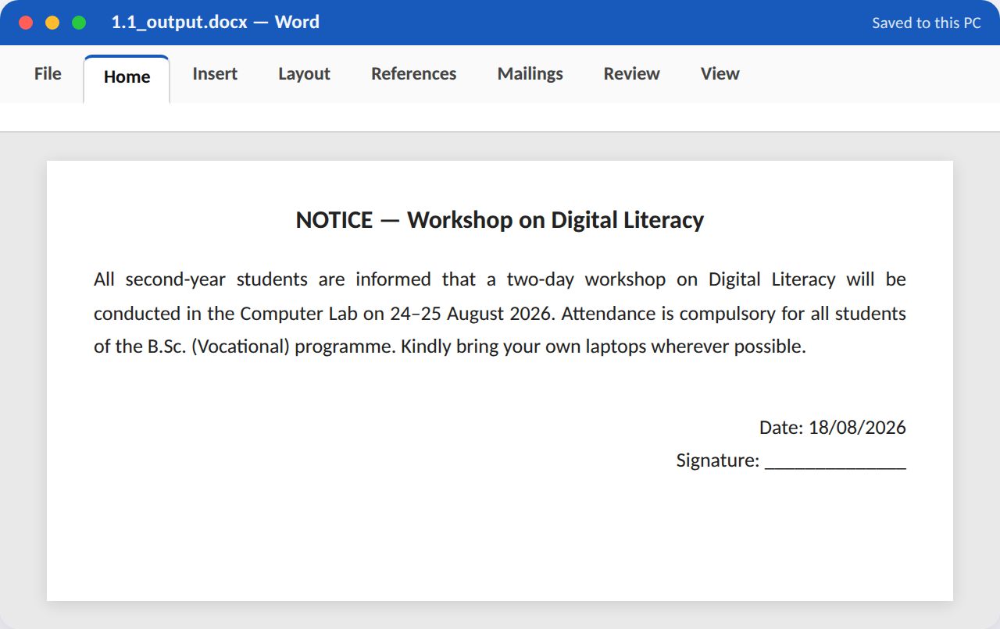
Procedure / hints:
- Open a new blank Word document and set the page margins to Normal (2.54 cm all sides).
- Type the title 'NOTICE — Workshop on Digital Literacy' and centre-align it; set font to 16 pt, Bold.
- Below the title, type a 3–4 sentence announcement paragraph and justify it (Ctrl+J).
- On a new line, right-align 'Date: _' and 'Signature: _' (Ctrl+R).
- Save the file as Notice_YourRollNo.docx in your workshop folder.
App, tabs & features used: Word — Home tab (Font group, Paragraph group, Alignment buttons); File > Save As
Task 1.2 — Apply Font & Paragraph Styling¶
Goal (~10–15 min): Take a plain, unformatted paragraph about 'Renewable Energy' and apply a Heading 1 style title, custom font colour, 1.5 line spacing, and a highlighted key term.
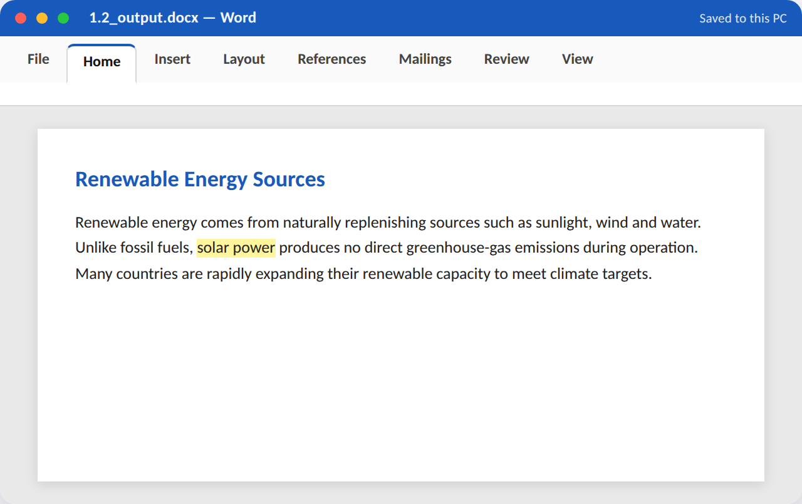
Procedure / hints:
- Type a heading 'Renewable Energy Sources' and apply the built-in Heading 1 style from the Styles gallery.
- Type or paste a 4–5 sentence paragraph below the heading.
- Select the paragraph and set line spacing to 1.5 (Home > Paragraph > Line Spacing).
- Change the heading's font colour to a theme colour of your choice.
- Use the Text Highlight Color tool to highlight one key technical term in the paragraph.
App, tabs & features used: Word — Home tab (Styles gallery, Font Color, Line Spacing, Text Highlight Color)
Task 1.3 — Create a Multi-Level Numbered List¶
Goal (~10–15 min): Build a two-level numbered agenda for a college fest, with 4 main items and 2–3 sub-items under two of them.
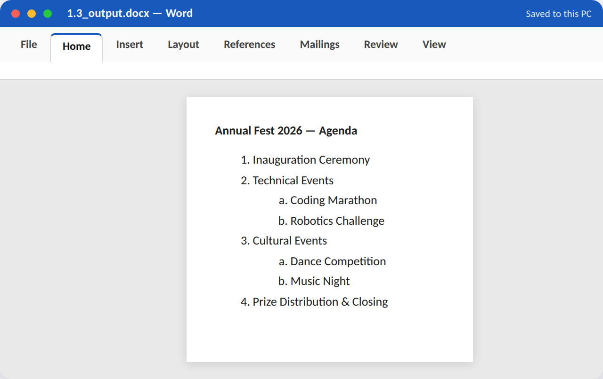
Procedure / hints:
- Type the title 'Annual Fest 2026 — Agenda'.
- Start a numbered list (Home > Numbering) and type 4 main agenda items.
- Place the cursor at the end of item 2, press Enter, then press Tab to demote to a sub-level; type 2 sub-items.
- Repeat the demotion for item 3 with 2 sub-items of its own.
- Adjust the multilevel list style if needed via Home > Multilevel List gallery.
App, tabs & features used: Word — Home tab (Numbering, Multilevel List, Increase/Decrease Indent)
Task 1.4 — Insert and Position an Image with Caption¶
Goal (~10–15 min): Insert a picture into a short report paragraph, wrap text around it, resize it proportionally, and add a numbered figure caption below it.
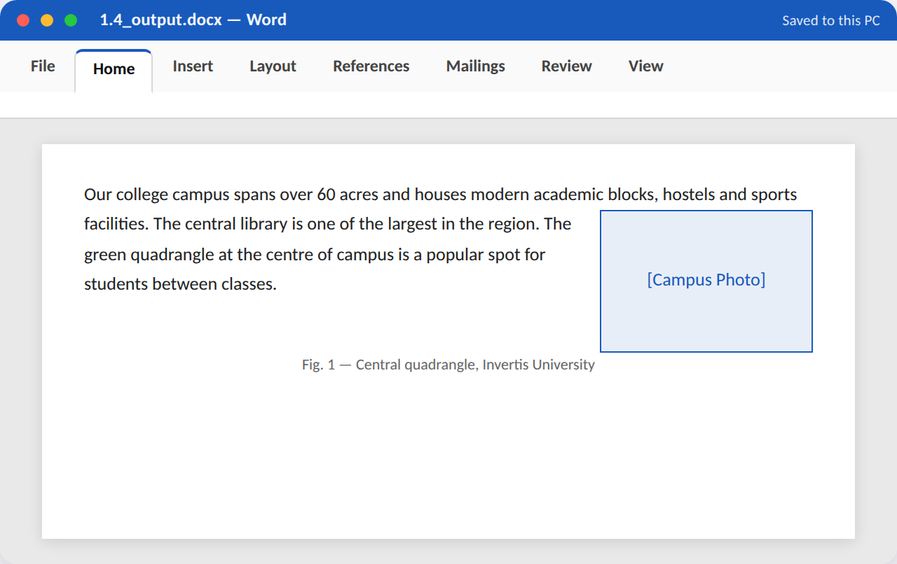
Procedure / hints:
- Type a 3-sentence paragraph about your college campus.
- Insert > Pictures and choose any image from your files.
- Click the picture, use Layout Options to apply 'Square' or 'Tight' text wrapping.
- Drag a corner handle to resize the image proportionally to about 2 inches wide.
- Right-click the picture > Insert Caption, and set it to read 'Fig. 1 —
'.
App, tabs & features used: Word — Insert tab (Pictures); Picture Format tab (Layout Options, Size); References (Insert Caption)
Task 1.5 — Set Page Margins, Orientation & Page Numbers¶
Goal (~10–15 min): Format a short report's cover section: custom margins, a title block, and automatic page numbering in the footer starting from page 1.
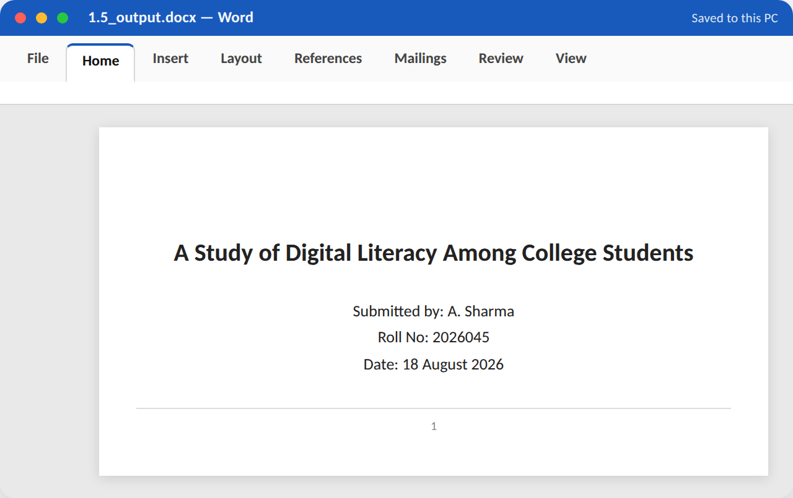
Procedure / hints:
- Layout tab > Margins > Custom Margins; set 1 inch on all sides.
- Type a report title block: title, your name, roll number, date — centred.
- Insert > Page Number > Bottom of Page > choose a centred style.
- Add 2–3 more blank pages (Ctrl+Enter for page breaks) to see the numbering increment.
- Confirm via Print Preview that margins and page numbers appear correctly.
App, tabs & features used: Word — Layout tab (Margins); Insert tab (Page Number); File > Print (Preview)
WS2 Tables, Lists & Page Layout¶
Unit 2 — MS Word, §§1.9–1.11
Five tasks on building and formatting tables, headers/footers, a table of contents, and footnotes — the layout tools needed for structured reports.
Try it in the Workshop Booklet
Record your work for this section — App/Tabs/Features used, your method, screenshots and results — in the Advanced MS Office Workshop Booklet.
Task 2.1 — Create and Format a Class Timetable¶
Goal (~10–15 min): Build a 6-day x 6-period timetable table with merged header cells, shaded header row, and centred text in every cell.
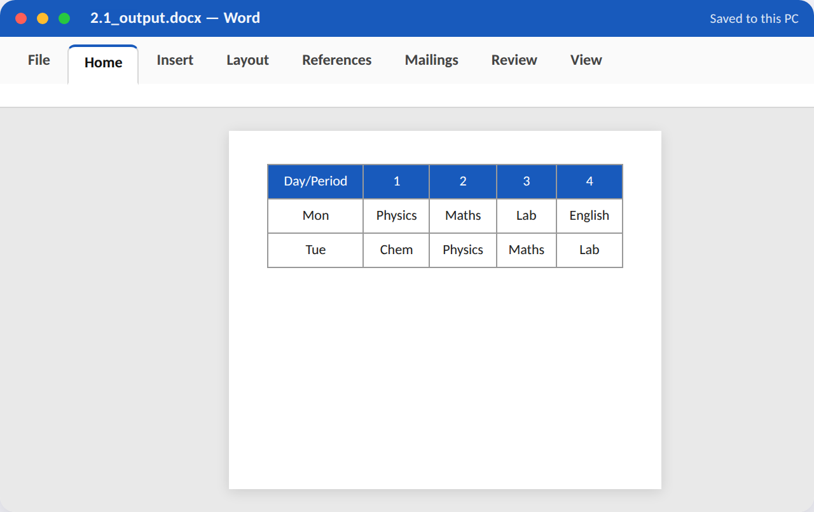
Procedure / hints:
- Insert > Table; create a table with 7 columns and 7 rows.
- In row 1, type period numbers 1–6 across columns 2–7, and merge column 1 rows 1–2 for a 'Day/Period' label.
- Type day names (Mon–Sat) down column 1 and sample subjects into the grid.
- Select the header row and apply a background shade (Table Design > Shading).
- Select the whole table and centre-align all text both horizontally and vertically (Layout > Alignment).
App, tabs & features used: Word — Insert tab (Table); Table Design tab (Shading, Borders); Table Layout tab (Merge Cells, Alignment)
Task 2.2 — Design a Fee Structure Table¶
Goal (~10–15 min): Create a fee-structure table with a Total row, alternating row shading, and appropriate right-aligned currency figures.
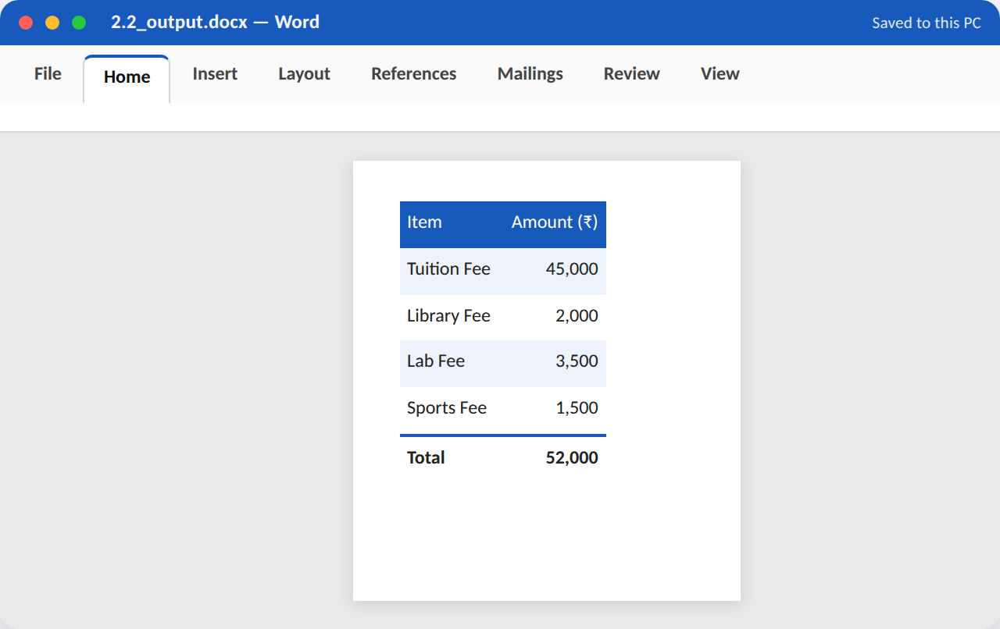
Procedure / hints:
- Insert a table with 2 columns and 6 rows: 'Item' and 'Amount (₹)'.
- Fill in 4 fee items (Tuition, Library, Lab, Sports) with amounts.
- In the last row, type 'Total' and manually sum the amounts.
- Right-align all figures in the Amount column.
- Apply a built-in Table Style with alternating (banded) row shading from Table Design.
App, tabs & features used: Word — Insert tab (Table); Table Design tab (Table Styles, Banded Rows); Layout Alignment
Task 2.3 — Insert an Automatic Table of Contents¶
Goal (~10–15 min): Apply heading styles to a 4-section outline and generate an automatic, clickable Table of Contents from those headings.
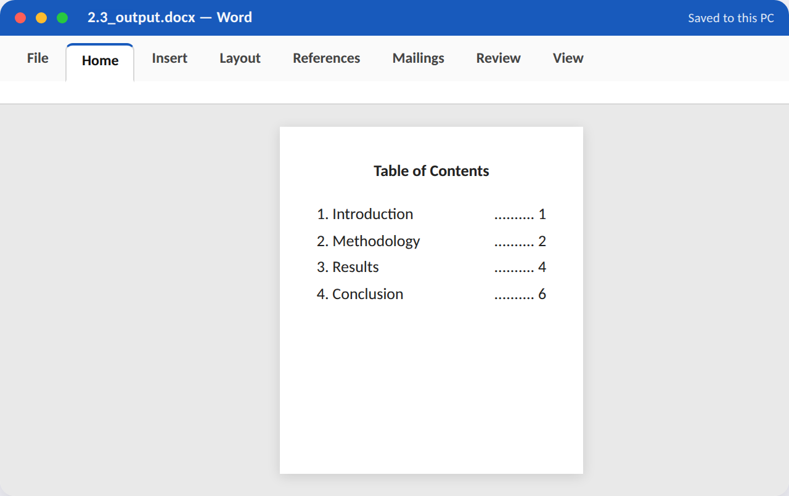
Procedure / hints:
- Type 4 section headings (e.g. Introduction, Methodology, Results, Conclusion), each on its own line.
- Apply Heading 1 style to each, and add a short dummy paragraph under each heading.
- Place the cursor on a new page before the headings; go to References > Table of Contents.
- Choose an Automatic Table style from the gallery.
- Add one more heading further down, then right-click the TOC and 'Update Field' to confirm it refreshes.
App, tabs & features used: Word — Home tab (Styles: Heading 1); References tab (Table of Contents, Update Table)
Task 2.4 — Add a Running Header/Footer with Page Numbers¶
Goal (~10–15 min): Add a header showing the document title on every page and a footer with 'Page X of Y' style numbering.
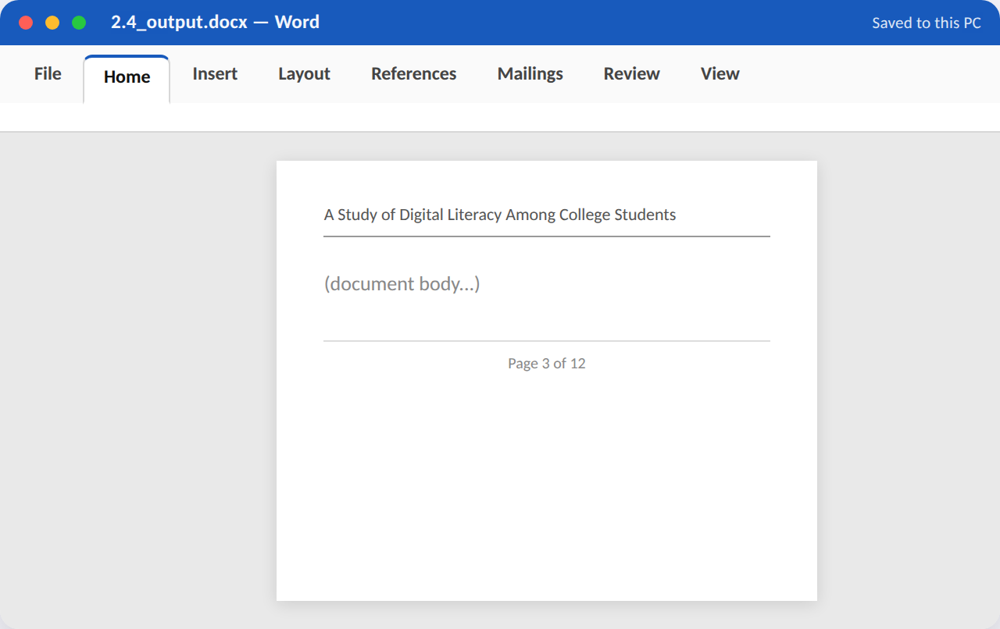
Procedure / hints:
- Insert > Header > Edit Header; type your report title, left-aligned.
- Add a thin bottom border to the header text for a professional look.
- Insert > Footer > Edit Footer; type 'Page ' then Insert > Page Number > Current Position.
- Type ' of ' then Insert > Number of Pages to complete 'Page X of Y'.
- Close Header & Footer and scroll through multiple pages to confirm it repeats.
App, tabs & features used: Word — Insert tab (Header, Footer, Page Number); Header & Footer Tools > Design tab
Task 2.5 — Insert Footnotes for an Academic Paragraph¶
Goal (~10–15 min): Write a short academic-style paragraph citing two sources using Word's automatic footnote numbering.
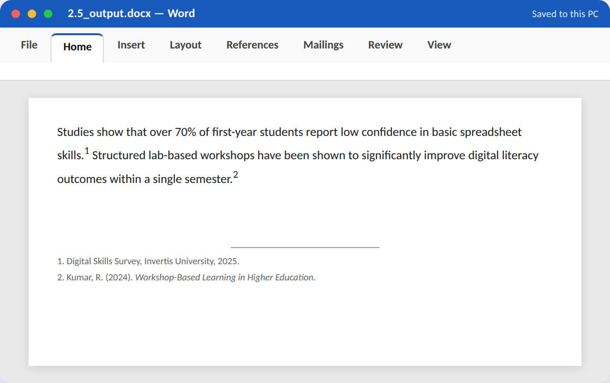
Procedure / hints:
- Type a 3–4 sentence paragraph making two factual claims.
- Place the cursor right after the first claim; go to References > Insert Footnote.
- Type a source citation in the footnote area at the bottom of the page.
- Repeat for the second claim with a different source.
- Confirm the footnote markers (¹, ²) appear correctly in the body text and renumber automatically if you add a third.
App, tabs & features used: Word — References tab (Insert Footnote)
WS3 Mail Merge & Reference Tools¶
Unit 2 — MS Word, §1.12; Unit 5 — integration with Excel data
Five tasks walking through the complete mail-merge workflow end-to-end, plus hyperlinks/bookmarks and collaborative review tools.
Try it in the Workshop Booklet
Record your work for this section — App/Tabs/Features used, your method, screenshots and results — in the Advanced MS Office Workshop Booklet.
Task 3.1 — Prepare a Mail-Merge Data Source¶
Goal (~10–15 min): Build a small Excel table of 5 recipients (Name, Course, Fee Due) to be used as a mail-merge data source.
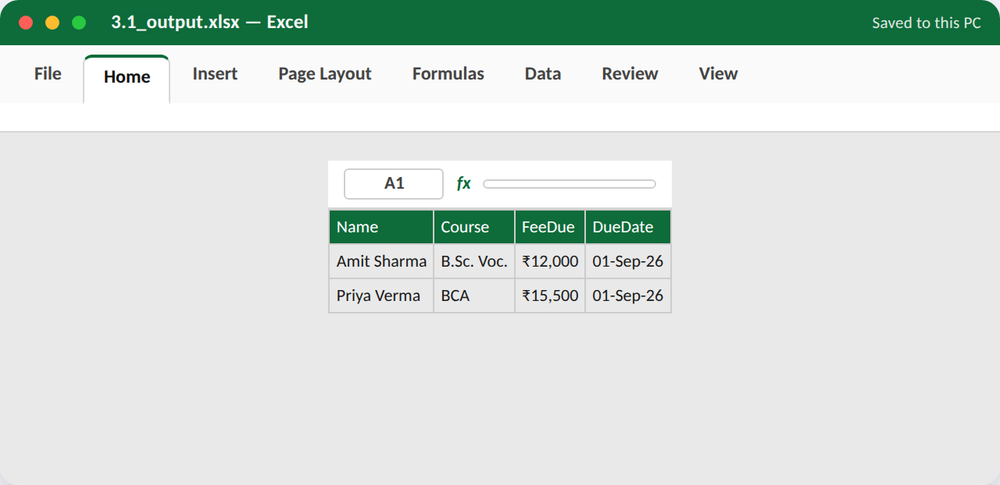
Procedure / hints:
- Open Excel and create column headers: Name, Course, FeeDue, DueDate.
- Enter 5 rows of sample student data under the headers.
- Format the header row in bold with a background fill.
- Format the FeeDue column as Currency.
- Save the file as MergeData.xlsx in your workshop folder.
App, tabs & features used: Excel — Home tab (Font, Fill Color, Number Format); File > Save As
Task 3.2 — Create a Mail-Merge Letter Template¶
Goal (~10–15 min): Write a fee-reminder letter template in Word with merge placeholders for Name, Course and FeeDue.
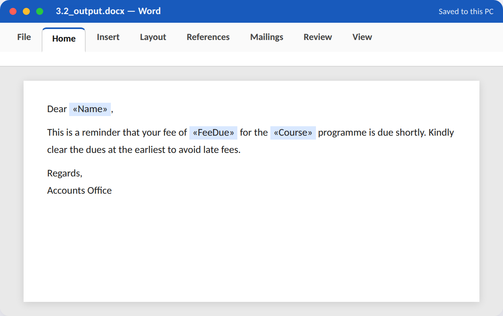
Procedure / hints:
- Open a new Word document and type a formal letter body with salutation and closing.
- Go to Mailings > Start Mail Merge > Letters.
- Mailings > Select Recipients > Use an Existing List, and browse to MergeData.xlsx.
- Place the cursor after 'Dear' and Mailings > Insert Merge Field > Name.
- Insert the Course and FeeDue merge fields at the appropriate points in the letter body.
App, tabs & features used: Word — Mailings tab (Start Mail Merge, Select Recipients, Insert Merge Field)
Task 3.3 — Complete the Merge & Preview Letters¶
Goal (~10–15 min): Finish the mail merge, preview each personalised letter, and produce a single merged document containing all 5 letters.
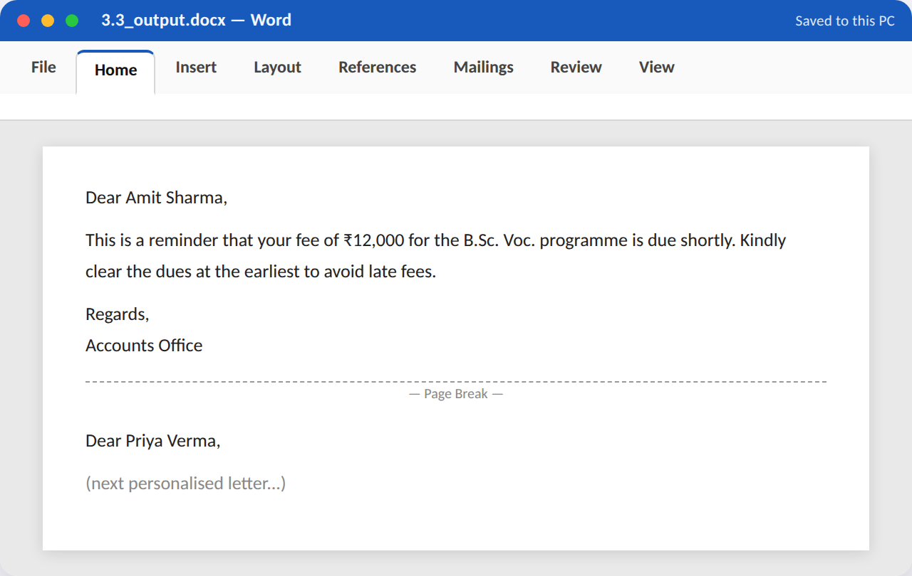
Procedure / hints:
- With the template and data source connected, click Mailings > Preview Results.
- Use the arrow buttons to page through and check each recipient's letter looks correct.
- Mailings > Finish & Merge > Edit Individual Documents > All.
- A new document opens with all 5 personalised letters, each on its own page — scroll through to verify.
- Save the merged output as MergedLetters.docx.
App, tabs & features used: Word — Mailings tab (Preview Results, Finish & Merge)
Task 3.4 — Insert Hyperlinks and Bookmarks¶
Goal (~10–15 min): Add a clickable web hyperlink and an internal bookmark link (jump-to-section) inside a document.
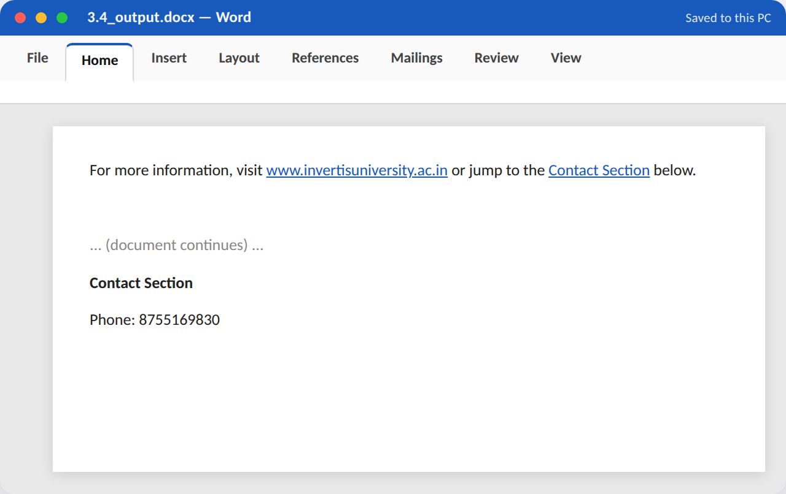
Procedure / hints:
- Type a sentence mentioning your university's website; select the university name.
- Insert > Link > Insert Link, and type the URL; confirm the text turns blue and underlined.
- Scroll to a heading further down; select it and Insert > Bookmark, name it 'ContactSection'.
- Scroll back up, select some text, and Insert > Link > Place in This Document > choose the bookmark.
- Ctrl+Click both links to confirm the web link opens a browser and the bookmark link jumps down the page.
App, tabs & features used: Word — Insert tab (Link, Bookmark)
Task 3.5 — Track Changes & Add Reviewer Comments¶
Goal (~10–15 min): Turn on Track Changes, make a few edits to a paragraph, and add a reviewer comment — then accept/reject changes.
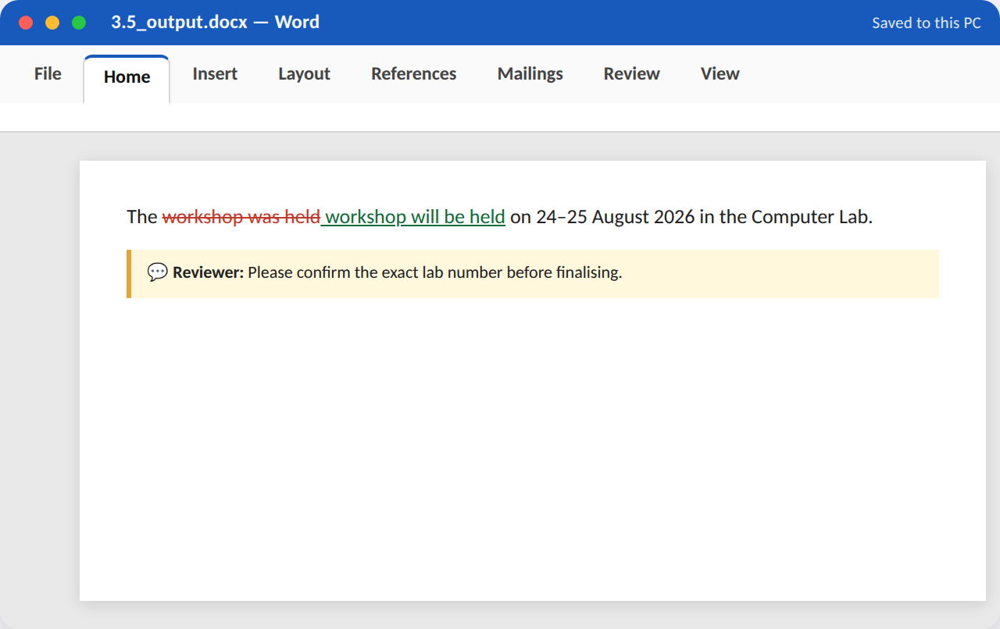
Procedure / hints:
- Open a paragraph of text; go to Review > Track Changes > turn it on.
- Delete a sentence and add a new one — note the strikethrough and coloured insertion marks.
- Select a phrase and Review > New Comment; type a suggestion.
- Go to Review > Accept > Accept All Changes for half the document, leaving the rest marked.
- Review > Next to step through remaining changes/comments one at a time.
App, tabs & features used: Word — Review tab (Track Changes, New Comment, Accept/Reject, Next)
WS4 Advanced Formatting & Desktop Publishing¶
Unit 2 — MS Word, §§1.8, 1.15
Five tasks that push Word beyond plain text formatting into desktop-publishing territory: columns, WordArt, SmartArt, watermarks and PDF export.
Try it in the Workshop Booklet
Record your work for this section — App/Tabs/Features used, your method, screenshots and results — in the Advanced MS Office Workshop Booklet.
Task 4.1 — Design a Two-Column Newsletter Layout¶
Goal (~10–15 min): Lay out a short campus-newsletter article in two newspaper-style columns with a column break.
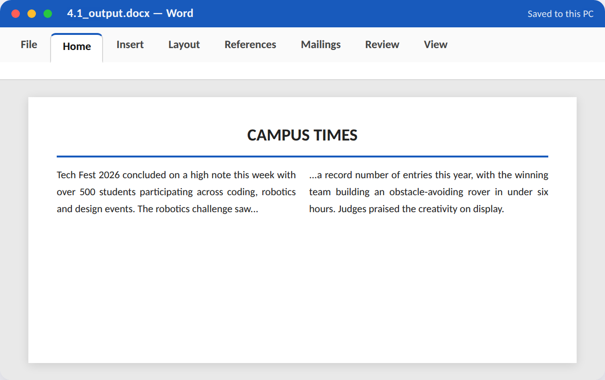
Procedure / hints:
- Type a newsletter headline and a 6–8 sentence article body.
- Select the article body and go to Layout > Columns > Two.
- Position the cursor mid-article where you want the column to break, and Layout > Breaks > Column.
- Justify the body text for a cleaner newspaper look.
- Adjust column spacing via Layout > Columns > More Columns if the gap looks too tight or wide.
App, tabs & features used: Word — Layout tab (Columns, Breaks); Home tab (Justify)
Task 4.2 — Add a WordArt Headline and Drop Cap¶
Goal (~10–15 min): Create a decorative WordArt-style headline plus a large drop-cap first letter for an article's opening paragraph.
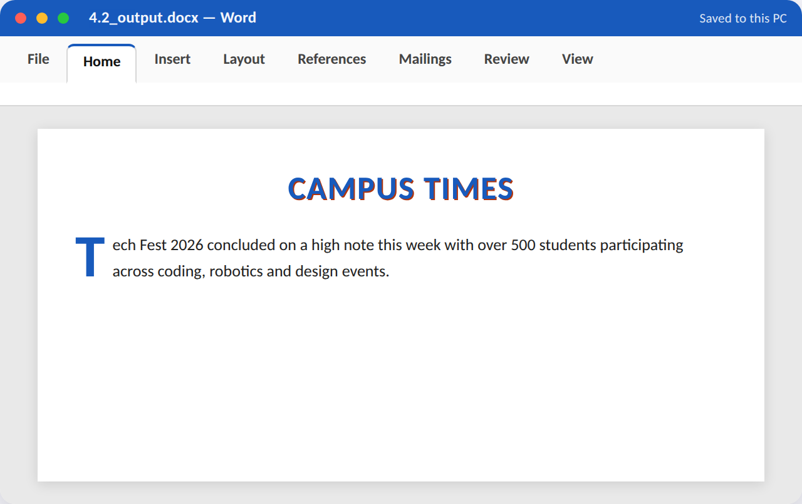
Procedure / hints:
- Insert > WordArt, choose a style, and type a headline such as 'CAMPUS TIMES'.
- Resize and position the WordArt at the top of the page.
- Below it, type an opening paragraph.
- Click inside the paragraph and go to Insert > Drop Cap > Dropped.
- Adjust the drop cap's font or number of lines it spans if needed (Drop Cap Options).
App, tabs & features used: Word — Insert tab (WordArt, Drop Cap)
Task 4.3 — Insert a SmartArt Process Diagram¶
Goal (~10–15 min): Illustrate the college's admission process as a 4-step SmartArt process diagram with short labels.
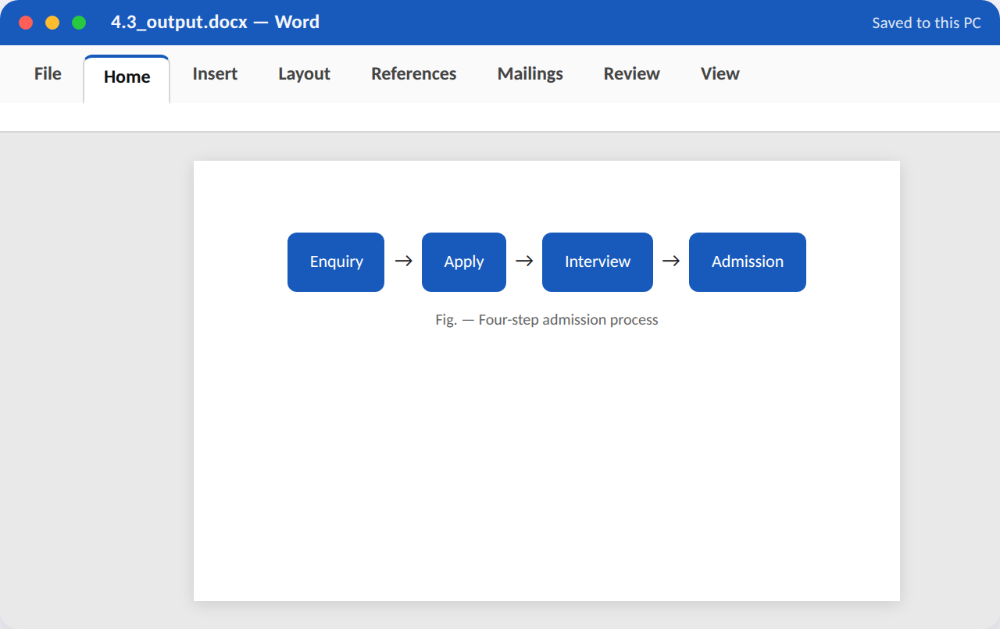
Procedure / hints:
- Insert > SmartArt > Process category, choose a basic left-to-right process layout.
- Type 4 short step labels (Enquiry, Apply, Interview, Admission) into the text pane.
- Select the SmartArt and change its colour scheme (SmartArt Design > Change Colors).
- Resize the SmartArt to fit neatly within the page margins.
- Add a one-line caption below explaining the diagram.
App, tabs & features used: Word — Insert tab (SmartArt); SmartArt Design tab (Change Colors, Layouts)
Task 4.4 — Apply a Watermark and Page Border¶
Goal (~10–15 min): Mark a draft report with a diagonal 'DRAFT' watermark and add a decorative page border.
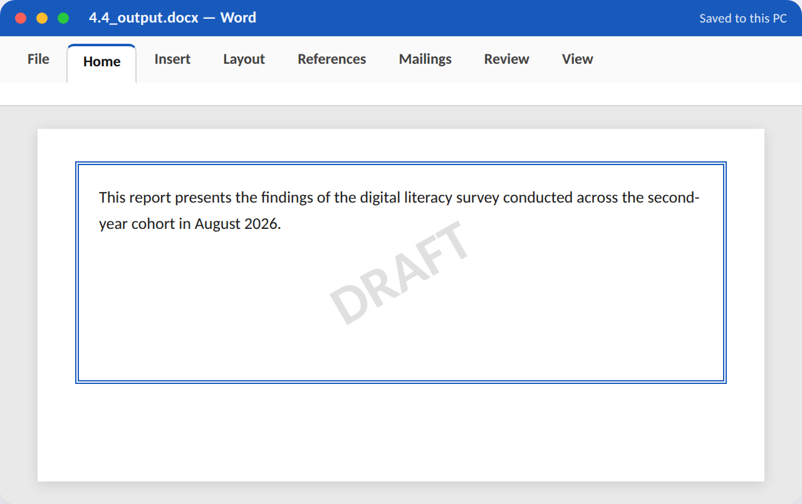
Procedure / hints:
- Open or create a 1-page document with some body text.
- Design tab > Watermark > Custom Watermark > Text Watermark > type 'DRAFT'.
- Choose a light grey colour and diagonal layout, then apply.
- Design tab > Page Borders; choose a border style, width and colour.
- Apply the border to the Whole Document and confirm it doesn't overlap the text.
App, tabs & features used: Word — Design tab (Watermark, Page Borders)
Task 4.5 — Export the Finished Document to PDF¶
Goal (~10–15 min): Take any finished document and export/save it as a PDF, then verify the formatting is preserved.
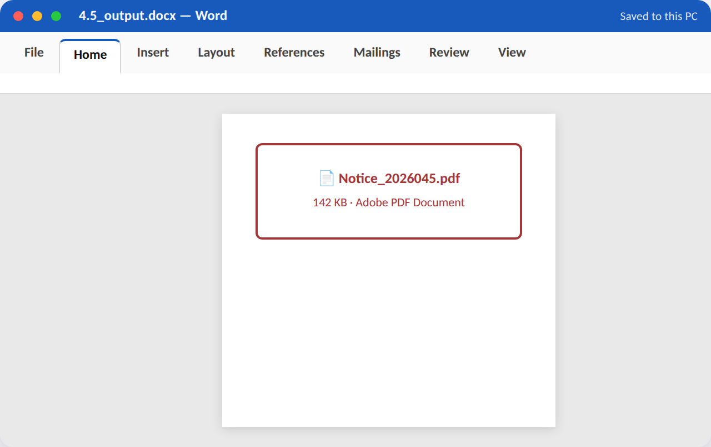
Procedure / hints:
- Open your finished Notice or Report document from an earlier task.
- Go to File > Export > Create PDF/XPS Document (or File > Save As and choose PDF as the type).
- Choose a filename and location, keeping 'Standard' quality for print.
- Open the exported PDF in a PDF viewer and check fonts, images and layout all match the original.
- Note the PDF's file size compared to the original .docx file.
App, tabs & features used: Word — File tab (Export > Create PDF/XPS, or Save As > PDF)
WS5 Worksheet Basics, Formulas & Formatting¶
Unit 3 — MS Excel, §§2.2–2.4
Five tasks covering the Excel fundamentals: building a sheet, basic formulas, number formatting, absolute references, and sorting/filtering.
Try it in the Workshop Booklet
Record your work for this section — App/Tabs/Features used, your method, screenshots and results — in the Advanced MS Office Workshop Booklet.
Task 5.1 — Build a Student Marks Sheet with SUM/AVERAGE¶
Goal (~10–15 min): Create a 6-student marks sheet across 3 subjects, and compute each student's Total and Average using formulas.
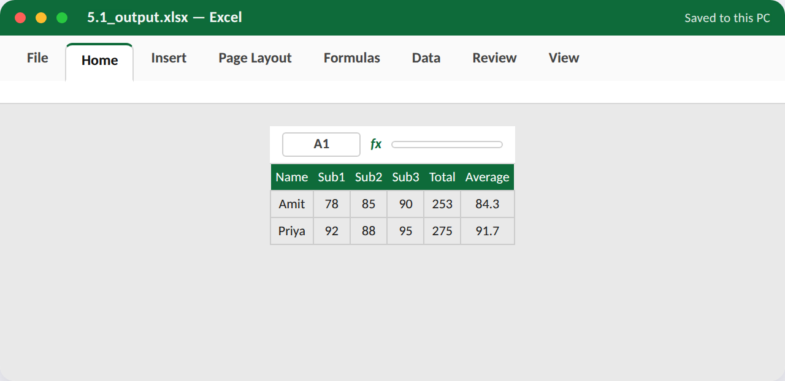
Procedure / hints:
- Type headers: Name, Subject1, Subject2, Subject3, Total, Average across row 1.
- Enter 6 rows of sample names and marks (out of 100 each).
- In the Total column, type =SUM(B2:D2) and fill down for all rows.
- In the Average column, type =AVERAGE(B2:D2) and fill down.
- Format the Average column to show 1 decimal place.
App, tabs & features used: Excel — Home tab (Number Format); Formulas — SUM(), AVERAGE(); fill handle
Task 5.2 — Apply Cell Formatting & Number Formats¶
Goal (~10–15 min): Format a small budget sheet with currency symbols, percentage figures, and clear borders/shading.
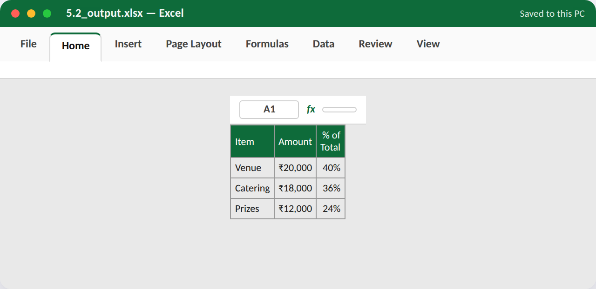
Procedure / hints:
- Build a 4-row budget list: Item, Amount, % of Total.
- Select the Amount column and apply the Currency number format (₹ symbol, 0 decimals).
- In the % of Total column, compute each item's share and apply Percentage format.
- Select the whole table and apply All Borders (Home > Borders).
- Shade the header row with a fill colour and bold white text.
App, tabs & features used: Excel — Home tab (Number Format dropdown, Borders, Fill Color, Font)
Task 5.3 — Use Relative vs Absolute Cell References¶
Goal (~10–15 min): Compute each item's tax amount using a single fixed tax-rate cell, demonstrating the $ absolute-reference lock.
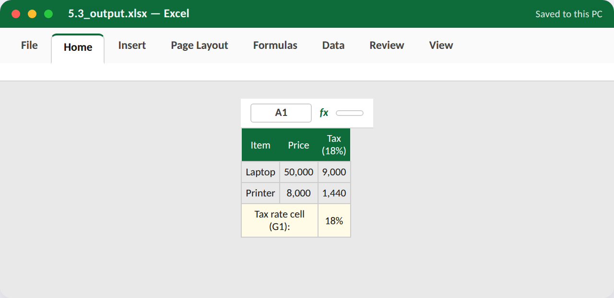
Procedure / hints:
- Set up a Price column for 5 items, and a single cell (e.g. G1) containing a tax rate like 18%.
- In the Tax column, type =B2*$G$1 for the first row, locking the rate cell with $ signs.
- Fill the formula down for all 5 items and confirm every row correctly references G1.
- Try removing the $ signs and re-filling down to see the (incorrect) result for comparison.
- Restore the absolute reference and add a Total row summing the Tax column.
App, tabs & features used: Excel — Formulas (relative vs $absolute$ references); F4 key to toggle reference type
Task 5.4 — Sort and Filter a Data List¶
Goal (~10–15 min): Sort a list of 8 products by price, then apply a filter to show only items above a chosen price threshold.
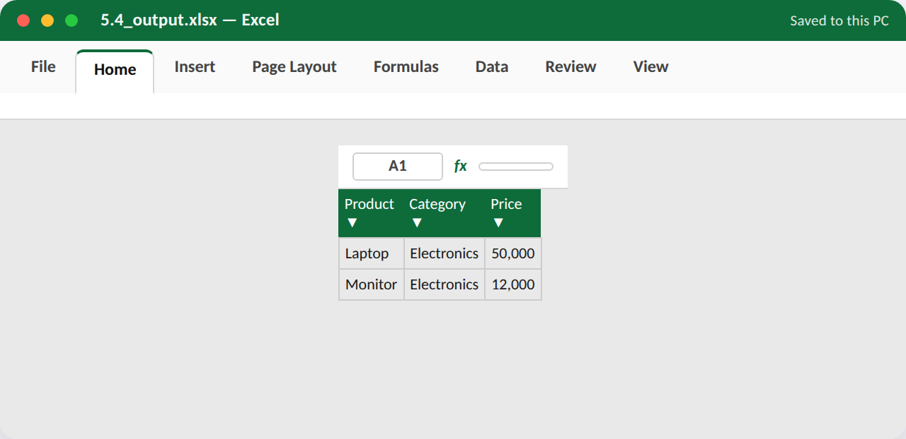
Procedure / hints:
- Build a list of 8 products with Name, Category and Price columns.
- Select the data range and Data > Sort > sort by Price, Largest to Smallest.
- Select the header row and Data > Filter to add dropdown filter arrows.
- Click the Price column's filter arrow > Number Filters > Greater Than, and enter a threshold.
- Confirm only matching rows remain visible, then clear the filter to restore the full list.
App, tabs & features used: Excel — Data tab (Sort, Filter, Number Filters)
Task 5.5 — Freeze Panes & Set Up Printing¶
Goal (~10–15 min): Freeze the header row of a 30-row sheet so it stays visible while scrolling, and configure Print Setup to fit on one page.
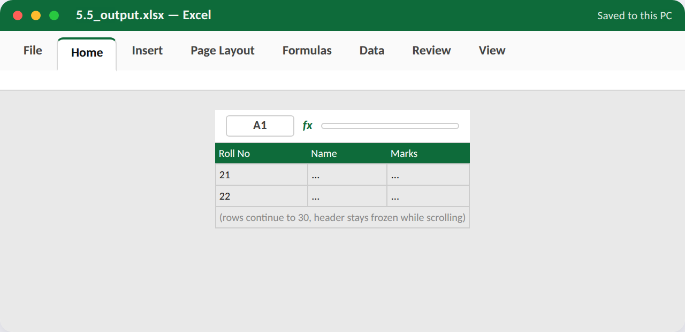
Procedure / hints:
- Open or extend a sheet to about 30 data rows with a header row at the top.
- Click cell A2, then View > Freeze Panes > Freeze Top Row.
- Scroll down and confirm the header row stays fixed at the top.
- Go to Page Layout > Print Titles and set row 1 to repeat at the top of every printed page.
- Page Layout > Size and Scale to Fit > set Width to 1 page, and preview via File > Print.
App, tabs & features used: Excel — View tab (Freeze Panes); Page Layout tab (Print Titles, Scale to Fit)
WS6 Functions, Data Tools & Conditional Formatting¶
Unit 3 — MS Excel, §§2.5–2.7
Five tasks on logical/lookup functions, conditional formatting, data validation, and data-cleaning tools.
Try it in the Workshop Booklet
Record your work for this section — App/Tabs/Features used, your method, screenshots and results — in the Advanced MS Office Workshop Booklet.
Task 6.1 — Grade Students with IF/Nested IF¶
Goal (~10–15 min): Assign letter grades (A/B/C/F) to 8 students' average marks using a nested IF formula.
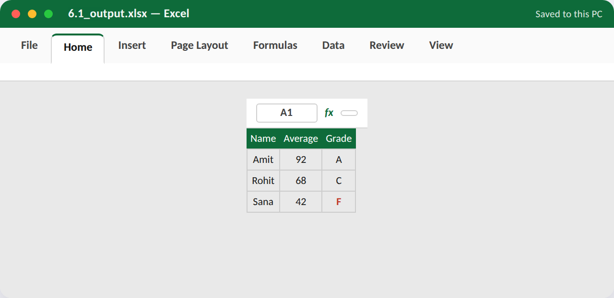
Procedure / hints:
- Set up Name and Average columns for 8 students.
- In the Grade column, type a nested IF: =IF(B2>=90,"A",IF(B2>=75,"B",IF(B2>=50,"C","F"))).
- Fill the formula down for all 8 students.
- Test the boundary cases by editing one average to exactly 90 and one to exactly 49.
- Apply bold red font to any cell showing an 'F' grade.
App, tabs & features used: Excel — Formulas — IF() (nested); Home tab (Conditional font formatting)
Task 6.2 — Look Up Values with VLOOKUP/XLOOKUP¶
Goal (~10–15 min): Use VLOOKUP (or XLOOKUP) to pull a product's price from a lookup table based on a typed product code.
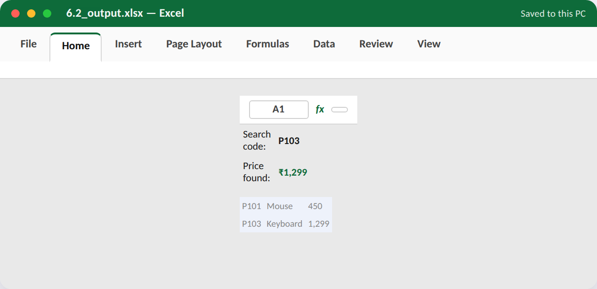
Procedure / hints:
- Build a small lookup table: ProductCode, ProductName, Price (5 rows), placed to the side.
- In a separate cell, type a product code to search for.
- In the next cell, use =VLOOKUP(searchCell, lookupTableRange, 3, FALSE) to fetch the price.
- Test with a code that exists, and one that doesn't (checking the #N/A result).
- If your Excel version supports it, redo the same lookup using =XLOOKUP() and compare.
App, tabs & features used: Excel — Formulas — VLOOKUP() or XLOOKUP()
Task 6.3 — Apply Conditional Formatting (Data Bars/Icon Sets)¶
Goal (~10–15 min): Visually highlight a sales figures column using Data Bars, and flag pass/fail marks with an Icon Set.
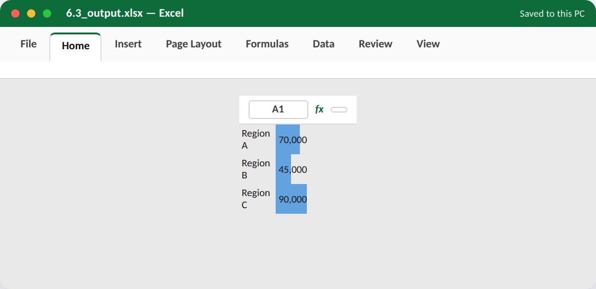
Procedure / hints:
- Build a Sales column with 8 numeric values.
- Select it and go to Home > Conditional Formatting > Data Bars, choose a colour.
- In a separate Marks column, apply Conditional Formatting > Icon Sets (e.g. traffic-light icons).
- Adjust the icon set's threshold rules via Manage Rules so the red icon means below 40.
- Change one value and confirm its bar/icon updates automatically.
App, tabs & features used: Excel — Home tab (Conditional Formatting: Data Bars, Icon Sets, Manage Rules)
Task 6.4 — Restrict Entries with Data Validation¶
Goal (~10–15 min): Create a dropdown-list data-validation rule so a 'Status' column only accepts Pending/Approved/Rejected.
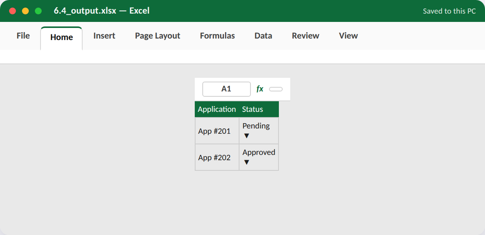
Procedure / hints:
- Type the three allowed values (Pending, Approved, Rejected) in a small side list.
- Select the Status column's data range; go to Data > Data Validation.
- Set Allow: List, and set the Source to your three-value range.
- Click a Status cell and confirm a dropdown arrow appears with only those 3 choices.
- Try typing an invalid value directly to confirm Excel rejects it with a warning.
App, tabs & features used: Excel — Data tab (Data Validation > List)
Task 6.5 — Remove Duplicates & Split Text to Columns¶
Goal (~10–15 min): Clean a messy student list: remove duplicate entries, then split a combined 'Name,RollNo' column into two separate columns.
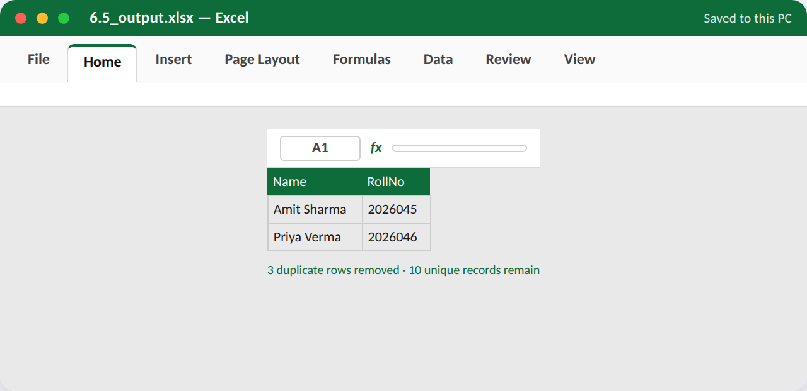
Procedure / hints:
- Build a 10-row list with 2–3 intentionally duplicated rows.
- Select the data and Data > Remove Duplicates; confirm the count of duplicates removed.
- In a new sheet/area, create a column of combined text like 'Amit Sharma,2026045'.
- Select that column and go to Data > Text to Columns > Delimited > comma.
- Confirm the name and roll number now sit in two separate, correctly labelled columns.
App, tabs & features used: Excel — Data tab (Remove Duplicates, Text to Columns)
WS7 Charts, PivotTables & Dashboards¶
Unit 3 — MS Excel, §§2.8–2.9
Five tasks building up from a simple chart to a full PivotTable/PivotChart mini-dashboard.
Try it in the Workshop Booklet
Record your work for this section — App/Tabs/Features used, your method, screenshots and results — in the Advanced MS Office Workshop Booklet.
Task 7.1 — Create a Column Chart from Sales Data¶
Goal (~10–15 min): Build a clustered column chart comparing monthly sales across 3 product categories.
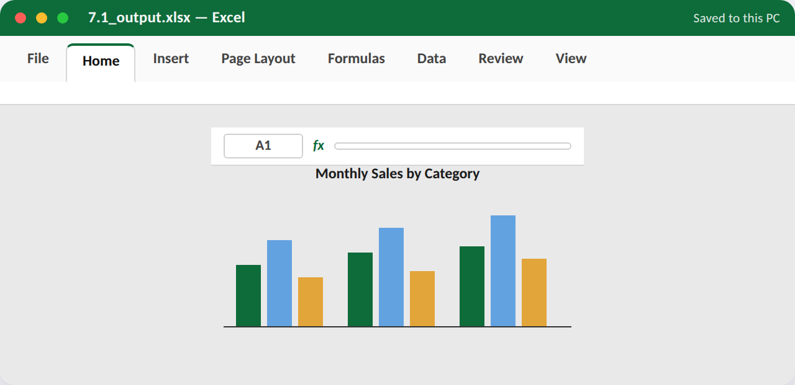
Procedure / hints:
- Build a small table: Month (rows) x 3 Category columns, 6 months of data.
- Select the full range including headers.
- Insert > Charts > Clustered Column.
- Add a chart title and axis titles via Chart Design > Add Chart Element.
- Move the chart below the data table and resize it to a readable size.
App, tabs & features used: Excel — Insert tab (Charts: Clustered Column); Chart Design tab (Add Chart Element)
Task 7.2 — Create a Trend Line Chart¶
Goal (~10–15 min): Plot 12 months of website visits as a line chart and add a linear trendline with displayed equation.
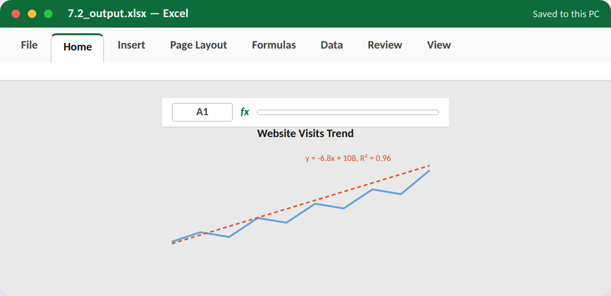
Procedure / hints:
- Build a Month (1–12) x Visits table with generally increasing numbers.
- Select the data and Insert > Charts > Line with Markers.
- Right-click the data series > Add Trendline > Linear.
- In Trendline options, tick 'Display Equation on chart' and 'Display R-squared value'.
- Change the trendline's colour/style so it's clearly distinguishable from the raw data line.
App, tabs & features used: Excel — Insert tab (Line Chart); Format Trendline pane (Linear, Display Equation)
Task 7.3 — Build a PivotTable Summary¶
Goal (~10–15 min): Summarise a 20-row sales dataset into a PivotTable showing total sales by Region and Product.
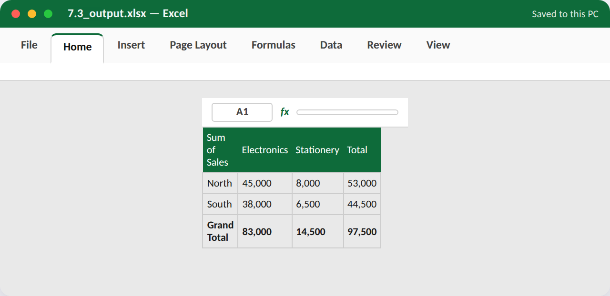
Procedure / hints:
- Prepare a raw data list with columns Region, Product, Sales (20 rows).
- Select the data and Insert > PivotTable > New Worksheet.
- Drag Region to Rows, Product to Columns, and Sales to Values (set to Sum).
- Rename the PivotTable's Values field label to 'Total Sales'.
- Apply a PivotTable Style from PivotTable Design for readability.
App, tabs & features used: Excel — Insert tab (PivotTable); PivotTable Fields pane; PivotTable Design tab
Task 7.4 — Build a PivotChart from the PivotTable¶
Goal (~10–15 min): Turn the Region x Product PivotTable into a linked PivotChart that updates when filters change.
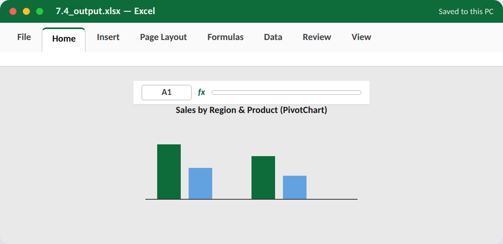
Procedure / hints:
- Click inside your existing PivotTable from the previous task.
- Go to PivotTable Analyze > PivotChart, and choose a Clustered Column chart.
- Use the field buttons on the chart to filter out one Region and observe the chart update live.
- Restore the filter, then move the PivotChart beside the PivotTable.
- Add a chart title summarising what it shows.
App, tabs & features used: Excel — PivotTable Analyze tab (PivotChart); Chart field buttons (interactive filters)
Task 7.5 — Assemble a One-Page Mini Dashboard¶
Goal (~10–15 min): Combine a KPI summary, one chart and one small table onto a single, uncluttered dashboard sheet.
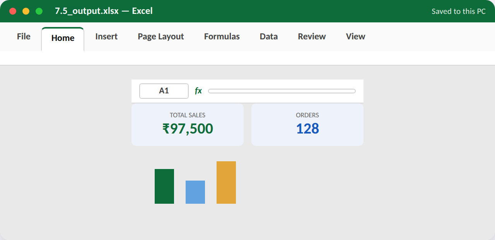
Procedure / hints:
- Create a new worksheet named 'Dashboard'.
- Add 2–3 large KPI number cells at the top (e.g. Total Sales, Total Orders) with bold big fonts.
- Paste/link your PivotChart from the previous task into the dashboard sheet.
- Add a small summary table alongside it.
- Turn off gridlines (View > Gridlines) for a cleaner, presentation-ready look.
App, tabs & features used: Excel — View tab (Gridlines); Copy/Paste Link; Home tab (large KPI fonts)
WS8 Slide Design & Content¶
Unit 4 — MS PowerPoint, §§3.1–3.3
Five tasks building a short presentation from a themed title slide through content, image and comparison slides.
Try it in the Workshop Booklet
Record your work for this section — App/Tabs/Features used, your method, screenshots and results — in the Advanced MS Office Workshop Booklet.
Task 8.1 — Design a Themed Title Slide¶
Goal (~10–15 min): Create a title slide for a 'Digital Literacy Workshop' presentation using a built-in Design theme.
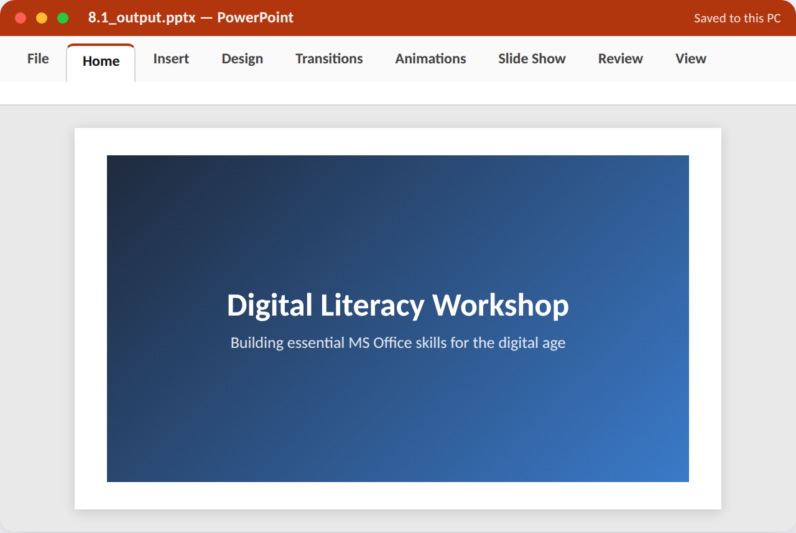
Procedure / hints:
- Open a new presentation and go to Design tab; choose an appealing theme.
- On the title slide layout, type the main title and a subtitle line.
- Try 2–3 theme Variants to see different colour palettes, and pick one.
- Insert a small logo or icon image into a corner of the slide.
- Check the slide reads clearly at a glance from a few metres away (font sizes not too small).
App, tabs & features used: PowerPoint — Design tab (Themes, Variants); Insert tab (Pictures)
Task 8.2 — Create a Bulleted Content Slide with SmartArt¶
Goal (~10–15 min): Build a content slide listing 4 workshop objectives as bullets, then convert them to a SmartArt list graphic.
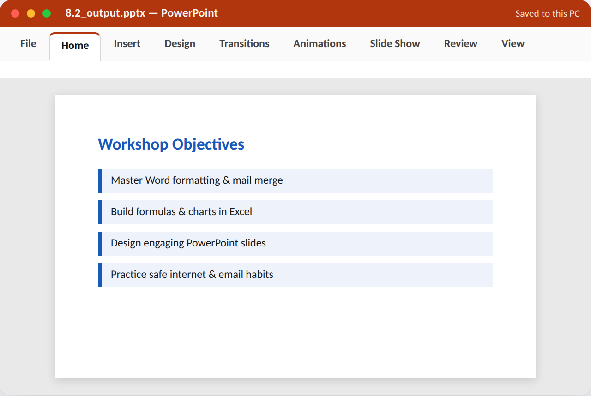
Procedure / hints:
- Add a new slide with a Title and Content layout.
- Type a title ('Workshop Objectives') and 4 short bullet points.
- Select the bulleted text box and go to Home > Convert to SmartArt.
- Choose a simple vertical list SmartArt style.
- Adjust SmartArt colours to match the slide theme.
App, tabs & features used: PowerPoint — Home tab (Bullets, Convert to SmartArt); SmartArt Design tab
Task 8.3 — Insert and Format Images/Icons¶
Goal (~10–15 min): Add two images/icons to a slide, apply a picture style, and align them neatly using PowerPoint's alignment guides.
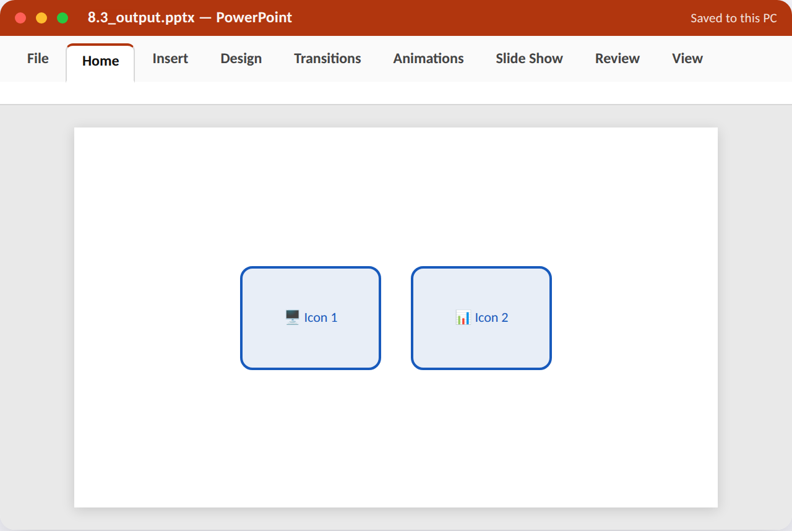
Procedure / hints:
- Add a new slide with a blank or two-content layout.
- Insert > Pictures, add two relevant images (or Insert > Icons for simple vector icons).
- Select an image and apply a Picture Style (rounded corners or a frame) from Picture Format.
- Drag both images and use the smart alignment guides (pink lines) to align their tops.
- Use Home > Align > Distribute Horizontally to space them evenly.
App, tabs & features used: PowerPoint — Insert tab (Pictures, Icons); Picture Format tab (Picture Styles); Home tab (Align)
Task 8.4 — Build a Comparison Slide with a Table¶
Goal (~10–15 min): Design a two-column 'Before vs After' comparison slide using an inserted PowerPoint table.
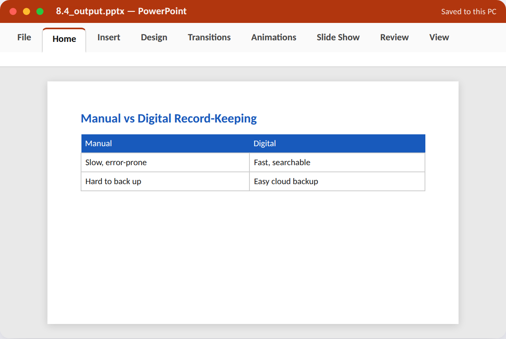
Procedure / hints:
- Add a new slide with a title 'Manual vs Digital Record-Keeping'.
- Insert > Table, create a 2-column, 4-row table.
- Type contrasting points in each row (Manual side vs Digital side).
- Apply a Table Style with a colour scheme matching your theme.
- Resize the table to fill the available slide space without overlapping the title.
App, tabs & features used: PowerPoint — Insert tab (Table); Table Design tab (Table Styles)
Task 8.5 — Design an Agenda / Section-Divider Slide¶
Goal (~10–15 min): Create a visually distinct section-divider slide that lists the presentation's 3 upcoming sections.
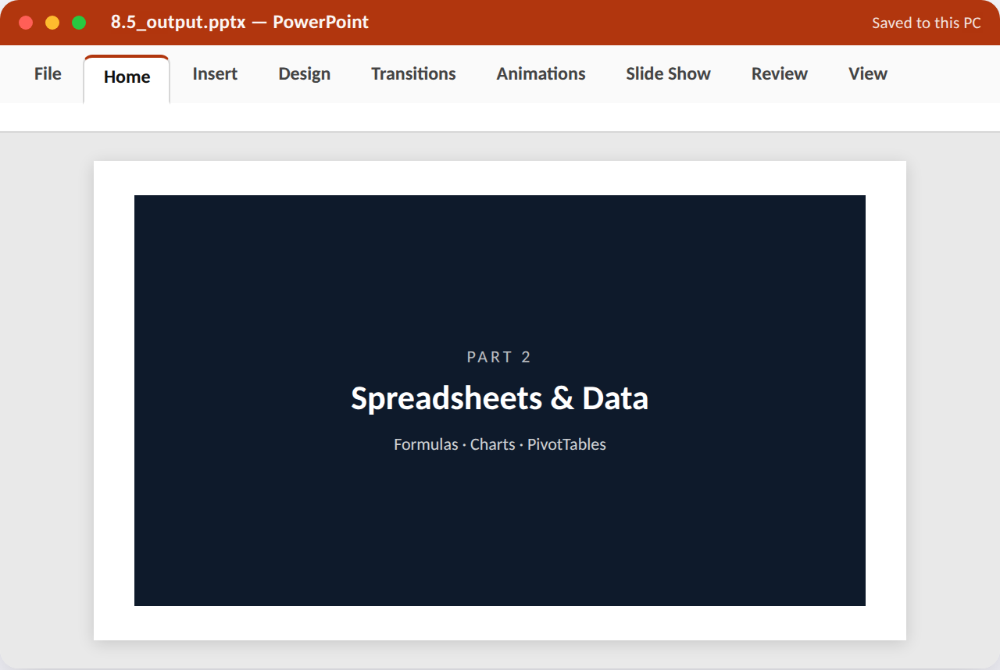
Procedure / hints:
- Add a new slide and change its layout to 'Section Header' if your theme has one.
- Type a large section title such as 'Part 2: Spreadsheets & Data'.
- Below it, list the 3 upcoming sub-topics in a smaller font.
- Apply a contrasting background colour/fill to visually separate this slide from content slides.
- Duplicate this slide (Ctrl+D) to quickly create dividers for the other two parts, editing the text each time.
App, tabs & features used: PowerPoint — Layout gallery (Section Header); Design tab (background fill); Ctrl+D duplicate
WS9 Animation, Transitions & Multimedia¶
Unit 4 — MS PowerPoint, §§3.4–3.6
Five tasks adding motion and interactivity: transitions, entrance animations, navigation buttons, embedded media, and rehearsed timing.
Try it in the Workshop Booklet
Record your work for this section — App/Tabs/Features used, your method, screenshots and results — in the Advanced MS Office Workshop Booklet.
Task 9.1 — Apply Slide Transitions¶
Goal (~10–15 min): Apply a consistent transition effect across all slides of a short deck, with a controlled duration.
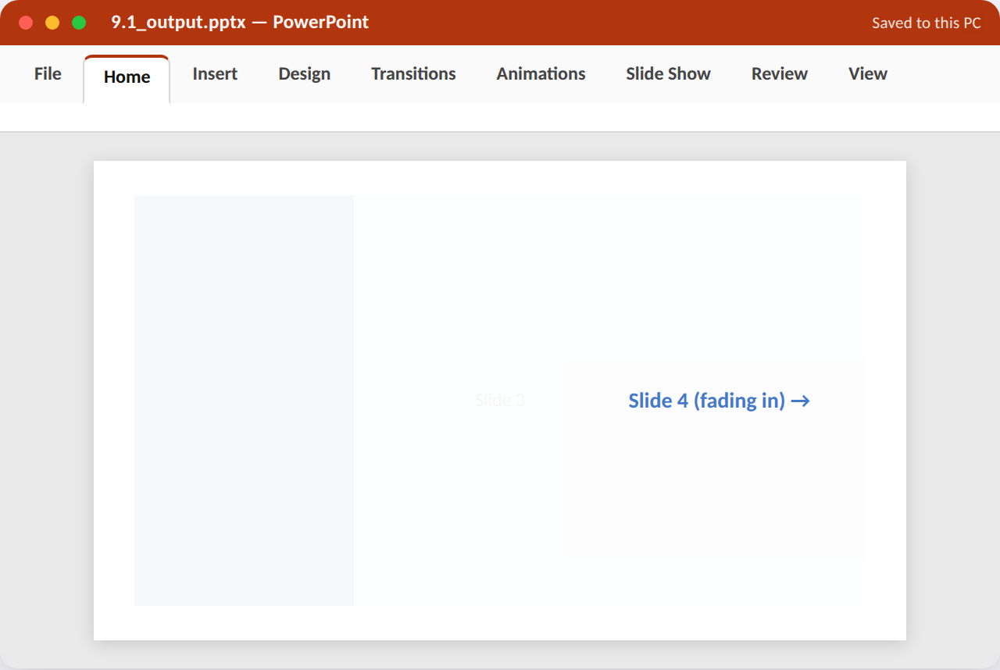
Procedure / hints:
- Open a presentation with at least 4 slides.
- Select the first slide and go to Transitions tab; choose an effect (e.g. Fade or Push).
- Set the transition Duration to about 0.75 seconds.
- Click 'Apply to All' so every slide shares the same transition.
- Play the slideshow (Slide Show > From Beginning) and click through to confirm the effect looks smooth.
App, tabs & features used: PowerPoint — Transitions tab (effect gallery, Duration, Apply to All)
Task 9.2 — Animate Bullet Points with Entrance Effects¶
Goal (~10–15 min): Animate a bulleted list so each point appears one-by-one as you click, rather than all at once.
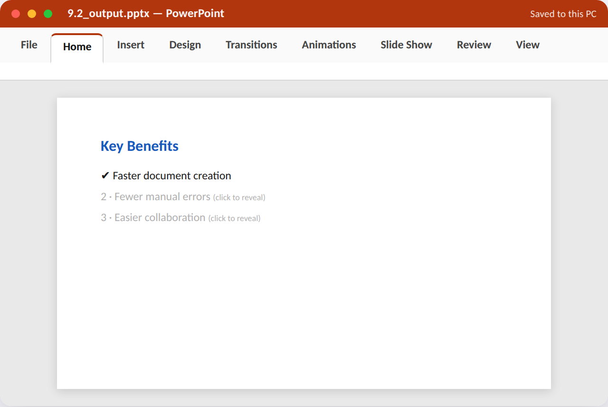
Procedure / hints:
- Select a slide with a 4-point bulleted list.
- Click the text box, go to Animations tab, and choose an Entrance effect (e.g. Fly In or Fade).
- Open the Animation Pane (Animations > Animation Pane) to see each bullet listed as a separate step.
- Set each bullet's Start option to 'On Click' so they appear one at a time.
- Preview the animation and reorder items in the Animation Pane if any appear out of sequence.
App, tabs & features used: PowerPoint — Animations tab (Entrance effects, Animation Pane, Start: On Click)
Task 9.3 — Add Hyperlinks & Action Buttons¶
Goal (~10–15 min): Add clickable navigation: a hyperlink jumping to a specific slide, and an Action Button returning to the agenda.
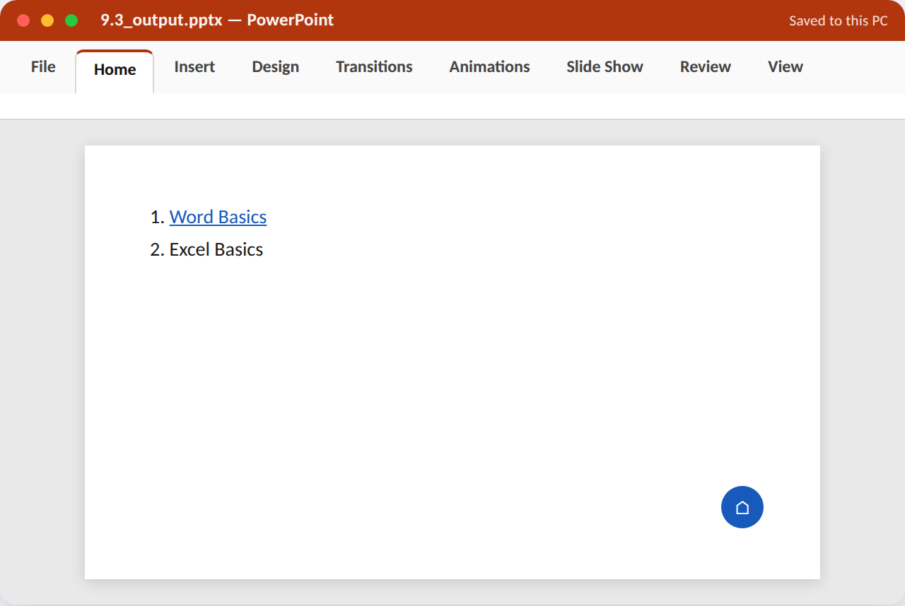
Procedure / hints:
- On your agenda slide, select one topic's text and Insert > Link > Place in This Document, choosing the relevant slide.
- Navigate to that target slide; Insert > Shapes > Action Buttons > Home (or Back).
- Draw the button in a bottom corner; in the Action Settings dialog, set Hyperlink to 'Slide...' and pick the agenda slide.
- Repeat the action button on 2–3 other content slides for consistent navigation.
- Run the slideshow and test that both the text hyperlink and action buttons jump correctly.
App, tabs & features used: PowerPoint — Insert tab (Link, Shapes > Action Buttons); Action Settings dialog
Task 9.4 — Insert Audio/Video or Animated Icons¶
Goal (~10–15 min): Embed a short audio clip or video (or an animated icon) into a slide and configure its playback options.
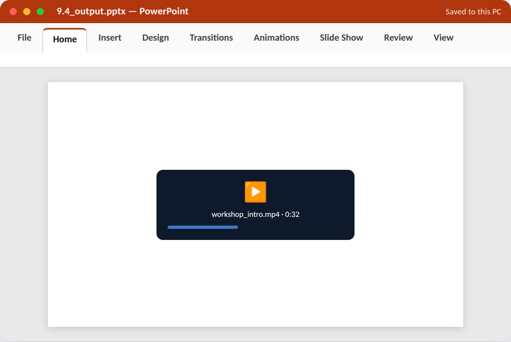
Procedure / hints:
- Select a slide and go to Insert > Media > Audio (or Video), and choose a file from your computer.
- With the media object selected, go to Playback tab and set Start to 'Automatically' or 'On Click' as appropriate.
- Resize/reposition the media player controls so they don't block other slide content.
- If using video, trim it (Playback > Trim Video) to a shorter, relevant clip.
- Preview the slide in Slide Show mode to confirm playback works as configured.
App, tabs & features used: PowerPoint — Insert tab (Media: Audio/Video); Playback tab (Start options, Trim Video)
Task 9.5 — Rehearse Timings & Set Up the Slide Show¶
Goal (~10–15 min): Use Rehearse Timings to record how long each slide needs, then configure the slide show to auto-advance using those timings.
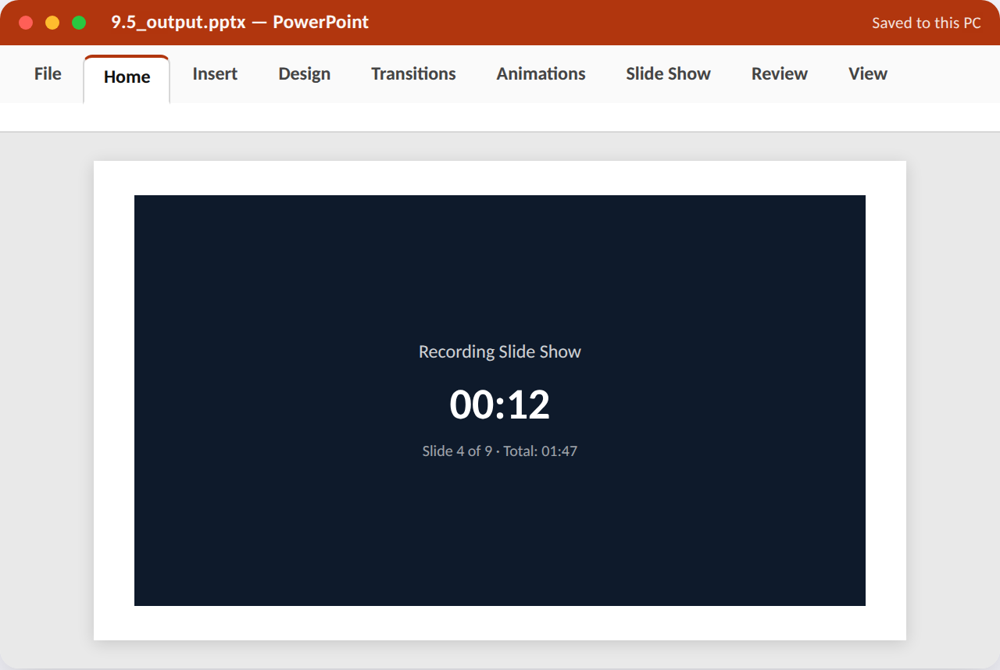
Procedure / hints:
- Go to Slide Show tab > Rehearse Timings; the presentation starts with a timer overlay.
- Talk through / read each slide at a natural pace, clicking to advance normally.
- At the end, confirm 'Yes' when asked whether to save the new slide timings.
- Go to Slide Show > Set Up Slide Show, and confirm 'Using timings, if present' is selected under Advance Slides.
- Play the show once more without clicking, confirming it now auto-advances on its own.
App, tabs & features used: PowerPoint — Slide Show tab (Rehearse Timings, Set Up Slide Show)
WS10 Internet Research & Professional Email¶
Unit 5 — Internet, Email & MS Access, §§4.2–4.10
Five tasks covering effective, safe web research and professional email practice.
Try it in the Workshop Booklet
Record your work for this section — App/Tabs/Features used, your method, screenshots and results — in the Advanced MS Office Workshop Booklet.
Task 10.1 — Perform an Advanced Web Search¶
Goal (~10–15 min): Use search operators to find 3 PDF resources about 'digital literacy' published specifically on .edu or .ac.in sites.
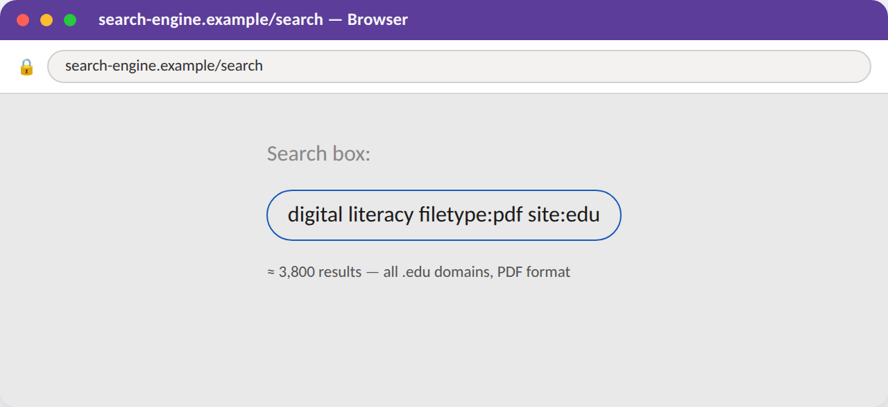
Procedure / hints:
- Open a search engine and type a plain search for 'digital literacy' first, noting how broad the results are.
- Refine the search using: digital literacy filetype:pdf site:edu
- Try a second variant using site:ac.in instead, to find Indian academic sources.
- Open 2–3 of the results and skim their first page to judge relevance.
- Record the exact search strings you used and how many results each returned.
App, tabs & features used: Browser — address/search bar; search operators (filetype:, site:)
Task 10.2 — Evaluate Website Credibility¶
Goal (~10–15 min): Compare two websites on the same topic and judge which is more credible using a short checklist (author, date, domain, references).
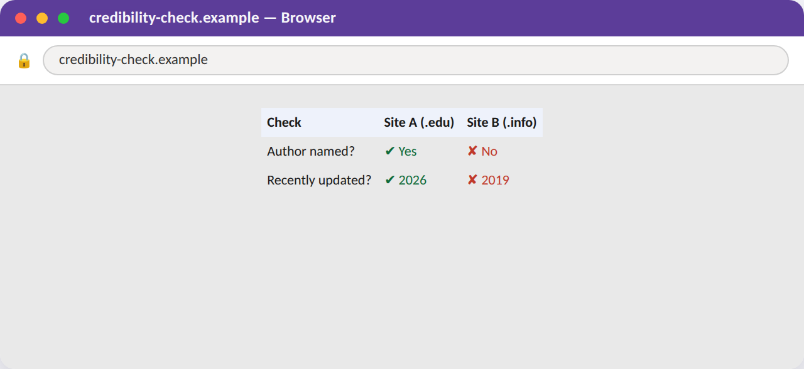
Procedure / hints:
- Find two different websites covering the same factual topic (e.g. a health or science claim).
- Check each site for a named author or organisation, and note if one is missing.
- Check the publish/update date on each page — is the information current?
- Look at the domain type (.gov/.edu/.org vs an unfamiliar .info/.xyz) and note any red flags.
- Write a 3–4 line judgement on which source is more trustworthy and why.
App, tabs & features used: Browser — page inspection (author byline, date, domain, footer/about page)
Task 10.3 — Compose a Professional Email with Attachment¶
Goal (~10–15 min): Write a formal email to a (mock) placement officer requesting an internship, with your resume attached and a proper subject line.
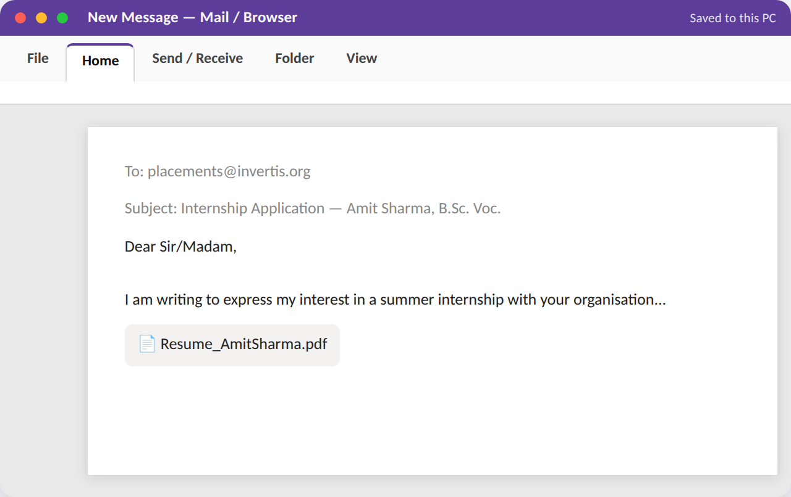
Procedure / hints:
- Open your email client and click Compose.
- Write a clear, specific subject line (e.g. 'Internship Application — Amit Sharma, B.Sc. Voc.').
- Write a 3-paragraph formal body: introduction, why you're interested, and a polite closing/call-to-action.
- Attach a resume file using the paperclip/Attach icon.
- Proofread for tone and typos before sending (or saving as draft for this exercise).
App, tabs & features used: Netmail — Compose window (Subject, Body, Attach)
Task 10.4 — Organise an Inbox with Folders & Rules¶
Goal (~10–15 min): Set up two folders (College, Personal) and one automatic rule that files incoming mail from a specific sender.
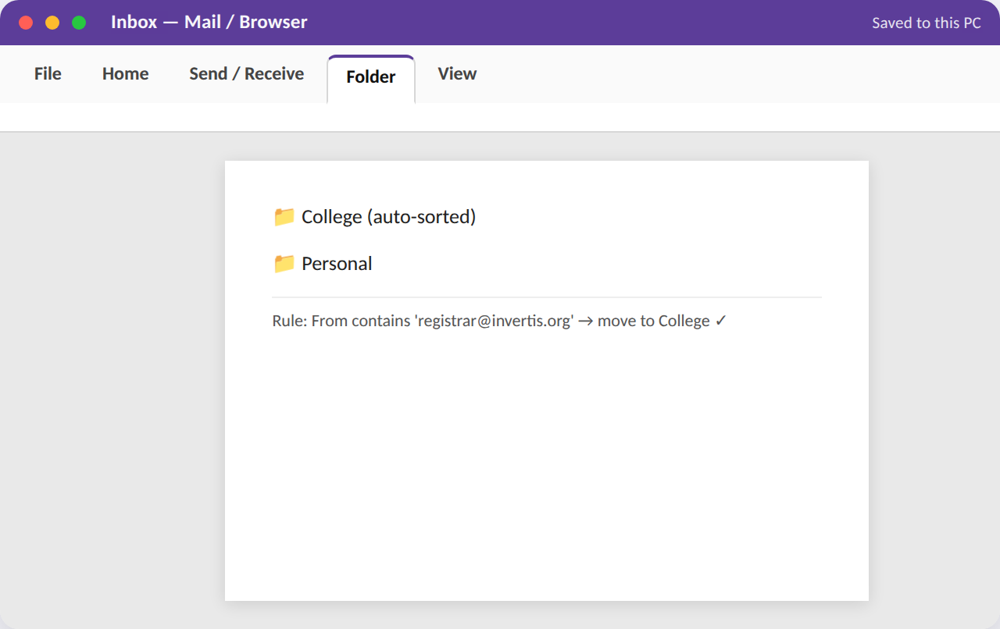
Procedure / hints:
- In your email client, create two new folders named 'College' and 'Personal'.
- Manually drag 2–3 existing emails into the appropriate folder to test.
- Open Settings/Rules and create a new rule: 'If From contains registrar@..., move to College'.
- Save the rule and send yourself (or simulate) a test email matching the condition.
- Confirm the test email lands directly in the College folder without manual sorting.
App, tabs & features used: Netmail — Folder pane (New Folder); Settings > Rules/Filters
Task 10.5 — Identify and Report a Suspicious Email¶
Goal (~10–15 min): Examine a simulated phishing email, list the specific red flags you notice, and use the Report/Junk button.
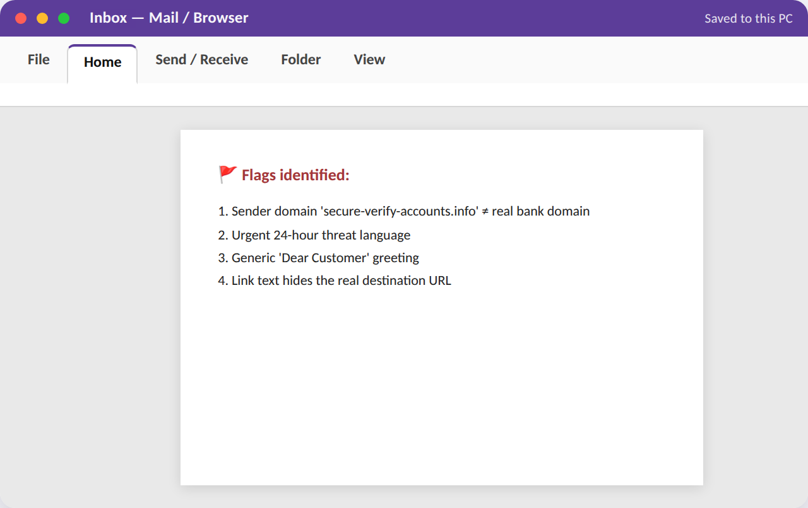
Procedure / hints:
- Open the suspicious-looking email in your inbox (or the workshop's sample).
- List at least 3 specific red flags: sender domain, urgency language, generic greeting, suspicious link, etc.
- Hover (without clicking) over any link to inspect the actual destination URL shown at the bottom of the window.
- Use the client's Report Phishing / Junk button rather than replying or clicking anything.
- Write a 2-line note on what you would tell a less experienced user about this email.
App, tabs & features used: Netmail — inspecting sender/domain and link preview; Report/Junk button
WS11 Database & Table Design¶
Unit 5 — Internet, Email & MS Access, §§5.3–5.7
Five tasks building a small student-records database from scratch: tables, data types, keys, relationships and validation.
Try it in the Workshop Booklet
Record your work for this section — App/Tabs/Features used, your method, screenshots and results — in the Advanced MS Office Workshop Booklet.
Task 11.1 — Design a Students Table with Correct Data Types¶
Goal (~10–15 min): Create a new database and a 'Students' table with 5 well-chosen fields and appropriate data types.
Procedure / hints:
- Create a new blank database and name it StudentRecords.accdb.
- In Design View, create a table named 'Students' with fields: RollNo, Name, Course, DOB, Email.
- Set RollNo to Short Text, DOB to Date/Time, and the rest to Short Text.
- Set RollNo as the Primary Key (right-click the row selector > Primary Key).
- Switch to Datasheet View and confirm the column headers and types look correct.
App, tabs & features used: Access — Table Design View (Field Name, Data Type); Design tab (Primary Key)
Task 11.2 — Enter Records via Datasheet View¶
Goal (~10–15 min): Populate the Students table with 8 realistic records directly in Datasheet View.
Procedure / hints:
- Switch the Students table to Datasheet View.
- Type 8 rows of realistic student data, one field at a time, using Tab to move across.
- Try leaving one required-feeling field blank to see Access's default behaviour.
- Use Ctrl+; to quickly insert today's date into a DOB-style test field.
- Resize columns (double-click the column border) so all data is visible without truncation.
App, tabs & features used: Access — Datasheet View; column resize; Ctrl+; (insert date)
Task 11.3 — Create a Second Related Table¶
Goal (~10–15 min): Add a 'Fees' table (RollNo, Amount, DueDate, Paid) that will later be linked to the Students table.
Procedure / hints:
- Create > Table Design; name the new table 'Fees'.
- Add fields: FeeID (AutoNumber, Primary Key), RollNo (Short Text), Amount (Currency), DueDate (Date/Time), Paid (Yes/No).
- Switch to Datasheet View and enter 6–8 rows, reusing RollNo values that exist in Students.
- Format the Amount column to show the Rupee symbol.
- Save and close the table.
App, tabs & features used: Access — Table Design View (AutoNumber, Currency, Yes/No data types)
Task 11.4 — Establish a Table Relationship¶
Goal (~10–15 min): Link the Students and Fees tables on RollNo, enforcing referential integrity.
Procedure / hints:
- Close all open tables, then go to Database Tools > Relationships.
- Add both Students and Fees tables to the Relationships window.
- Drag Students.RollNo onto Fees.RollNo to open the Edit Relationships dialog.
- Tick 'Enforce Referential Integrity' and click Create.
- Confirm a join line with '1' and '∞' markers now connects the two tables.
App, tabs & features used: Access — Database Tools tab (Relationships); Edit Relationships dialog (Enforce Referential Integrity)
Task 11.5 — Apply Field Validation Rules¶
Goal (~10–15 min): Add a Validation Rule to the Fees table's Amount field so negative or zero fee amounts are rejected.
Procedure / hints:
- Open the Fees table in Design View and click the Amount field.
- In the Field Properties pane, find the Validation Rule box.
- Type the rule: >0
- In Validation Text, type a friendly message: 'Fee amount must be greater than zero'.
- Switch to Datasheet View and try entering 0 or a negative number to confirm the rule blocks it.
App, tabs & features used: Access — Table Design View (Field Properties: Validation Rule, Validation Text)
WS12 Queries, Forms & Reports¶
Unit 5 — Internet, Email & MS Access, §§5.8–5.11
Five tasks turning the raw Students/Fees database into a genuinely useful application: queries, a data-entry form, a grouped report and export.
Try it in the Workshop Booklet
Record your work for this section — App/Tabs/Features used, your method, screenshots and results — in the Advanced MS Office Workshop Booklet.
Task 12.1 — Build a Select Query with Criteria¶
Goal (~10–15 min): Create a query listing only students whose fees remain unpaid (Paid = No).
Procedure / hints:
- Create > Query Design; add both Students and Fees tables.
- Drag Name, Course from Students and Amount, Paid from Fees into the grid.
- In the Criteria row under Paid, type: No
- Run the query and confirm only unpaid students appear.
- Save the query as 'UnpaidFees'.
App, tabs & features used: Access — Create tab (Query Design); Query Design grid (Criteria row); Run
Task 12.2 — Build a Multi-Table Join Query¶
Goal (~10–15 min): Create a query combining Students and Fees data to show each student's name alongside their total amount due, sorted highest first.
Procedure / hints:
- Create > Query Design; add Students and Fees (the join line should already exist from the relationship).
- Add Name and Course from Students, and Amount from Fees.
- Set the Sort row under Amount to Descending.
- Run the query and check the results are correctly matched and sorted.
- Save the query as 'FeesByStudent'.
App, tabs & features used: Access — Query Design grid (multi-table join, Sort row)
Task 12.3 — Create a Data-Entry Form¶
Goal (~10–15 min): Generate and lightly customise a Form for entering new Students records, instead of typing directly into the table.
Procedure / hints:
- Select the Students table, then Create > Form to auto-generate a basic form.
- Switch to Layout View and reposition/resize a couple of fields for a cleaner look.
- Add a title text box at the top reading 'New Student Registration'.
- Switch to Form View and use the Navigation buttons at the bottom to add one new test record.
- Confirm the new record also appears when you reopen the Students table.
App, tabs & features used: Access — Create tab (Form); Layout View; Form View (Navigation buttons)
Task 12.4 — Create a Grouped Fee Report¶
Goal (~10–15 min): Build a Report grouping the FeesByStudent query results by Course, with a subtotal for each course.
Procedure / hints:
- Select the FeesByStudent query, then Create > Report.
- Switch to Design View (or use the Report Wizard) and add Grouping by Course.
- In the Course group footer, add a Text Box with an expression summing Amount for that group.
- Add a Report Header with a title 'Fee Collection Summary by Course'.
- Switch to Print Preview and confirm subtotals and a grand total appear correctly.
App, tabs & features used: Access — Create tab (Report, Report Wizard); Report Design (Group Footer, Sum expression)
Task 12.5 — Sort, Filter & Export the Results¶
Goal (~10–15 min): Apply an on-the-fly sort/filter to the Students datasheet, then export the filtered results to Excel.
Procedure / hints:
- Open the Students table in Datasheet View.
- Click the Course column's filter arrow, and filter to show only one course.
- Sort the filtered list alphabetically by Name (A to Z).
- Go to External Data > Export > Excel, and export the filtered, sorted view.
- Open the exported file in Excel to confirm the data and order match what you saw in Access.
App, tabs & features used: Access — Datasheet filter/sort controls; External Data tab (Export to Excel)